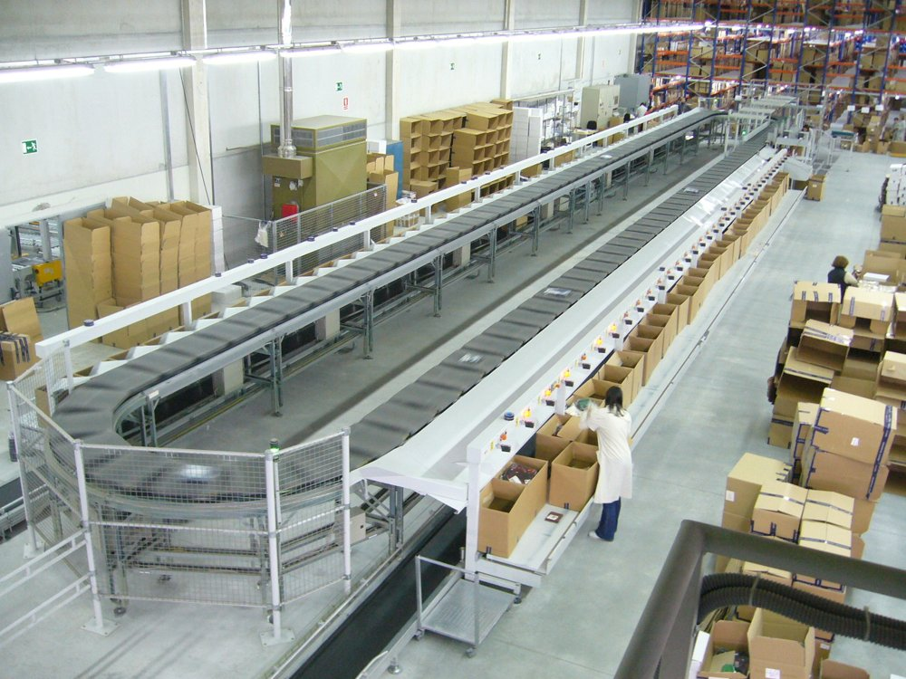

5장 부록 예제 · 3차시 계산 실습을 웹으로
숫자를 바꾸면 설비가 움직입니다
파이썬으로 계산했던 네 가지 실습을 화면에서 직접 바꿔 보고, 그래프와 애니메이션으로 확인합니다.
계산식은 실습 소스(conveyor.py · picking.py · agv.py · sorter.py)와 같습니다.
BSP 센터 제원 (실습 전제)
| 관리 품목 수 | 1,200 SKU (5개 카테고리) |
|---|---|
| 일 평균 출고 | 약 48,000 박스 |
| 피크 배수 | 1.6배 |
| 작업 시간 | 16시간 (2교대) |
| 소터 | 슬라이딩슈 8,000개/h · 12슈트 |
| AMR | 속도 1.2 m/s · 적재·하역 20초 |
네 실습이 공통으로 말하는 것
수요를 미리 알면 더 나은 답이 나옵니다.
- 컨베이어 속도는 피크 물량을 알아야 정한다
- 동선은 무엇이 나갈지 알아야 미리 정렬한다
- AMR 대수는 운반 건수를 알아야 산정한다
- 소터 여유는 시간대별 물량을 알아야 판단한다
그래서 다음 과목이 수요 예측입니다.
실습 ① · conveyor.py
컨베이어 처리량
처리량(개/시간) = 속도(m/분) ÷ (박스 길이 + 안전 간격) × 60
입력값 바꿔 보기
피치 (박스+간격)
-
시간당 처리량
-
필요량 대비
-
벨트 애니메이션
화면 속 1초 = 실제 1초 · 지나간 박스 0개 · 시뮬레이션 처리량 -개/h
벨트 위 눈금은 1 m 간격입니다.
속도별 처리량 — 간격 세 가지 비교
실습 표 (현재 박스·간격 기준)
| 속도 | 처리량 | 판정 |
|---|
실습 ② · picking.py
피킹 동선 거리
거리 = 통로를 따라 걷는 거리(맨해튼 거리) · 시작 (0,0) → 로케이션 6곳 → 출고 컨베이어 (28,44)
블록맵 (1칸 = 1 m)
회색 블록 = 랙 · 흰 칸 = 통로(세로 통로 x=5·14·23, 가로 통로 4 m 간격) · 걷는 길이는 맨해튼 거리와 같습니다.
주문 순서 그대로
0 / - m
지그재그 정렬
0 / - m
주문
정렬
절감 -
거리 비교
하루로 환산하면
실습 ③ · agv.py
AGV · AMR 대수 산정
1회 사이클 = 거리 × 2 ÷ 속도 + 적재·하역 | 필요 대수 = 올림( 시간당 운반 건수 ÷ (3600 ÷ 사이클) × (1 + 여유율) )
입력값 바꿔 보기
1회 사이클
-
1대 시간당 처리
-
계산상 대수
-
필요 대수
-
필요한 AMR — 실제 대수만큼
운반에 필요 여유분(고장·충전·피크)
1대의 사이클 — 적재 → 주행 → 하역 → 복귀
화면 속 1초 = 실제 초 · 남은 시간 -
걸린 시간 — 사이클 구성
건수 — 요구 vs 처리 능력
거리 — 거리별 필요 대수
실습 ④ · sorter.py
소터 용량 검토
피크 시간 물량 = 일 출고 × 피크 배수 ÷ 작업 시간 | 부하 = 피크 시간 물량 ÷ 소터 능력 (80% 미만 여유 · 100% 미만 주의 · 이상 부족)
입력값 바꿔 보기
실습 상황 바로가기
설비 대비 부하
-
피크 시간 물량
-
슈트당 물량
-
참고 사진 — 실제 소터

사진은 크로스벨트 방식 소터입니다(실습의 슬라이딩슈와 방식은 다르지만 '라인 위 화물을 슈트로 나눈다'는 역할은 같습니다).
사진: Tecnowey · CC BY-SA 3.0 · Wikimedia Commons
사진: Tecnowey · CC BY-SA 3.0 · Wikimedia Commons
슬라이딩슈 소터 그림 — 투입 속도는 피크 시간 물량에 비례
분류 0 · 처리 못 해 재순환 0
실습 네 상황 — 부하 비교
출고를 몇 시간에 몰아 내보내나 — 집중도별 부하